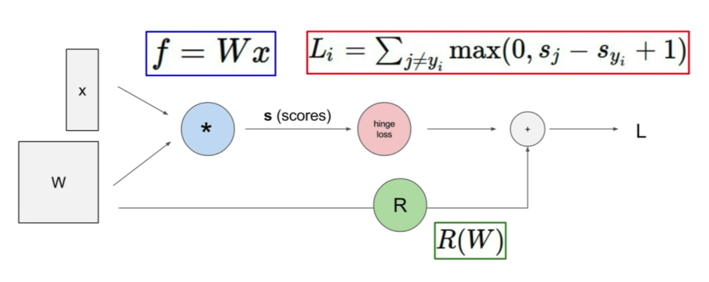
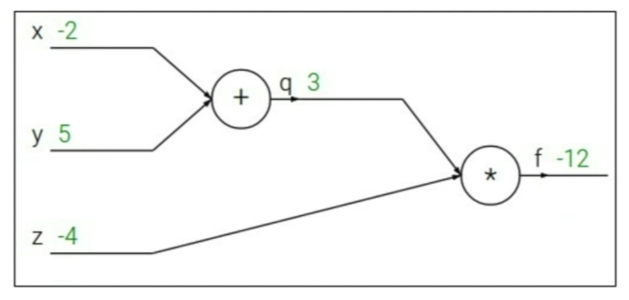

CS231n Lecture 4 Introduction to Neural Networks
Computation Graph¶

Backpropagation: used for finding gradient¶
e.g. where x = -2, y = 5, z = -4

Notations:¶
goal is to find:
In order to get all the targets, we start from the last node where
Then find the following in sequences: 1. 2. 3. -- using chain rule 4. -- using chain rule
Using Chain rule: Use upstreaming compound and multiple with the local compound to derive the desire partial derivative
For each node, we just need "local gradient" which is the new upstream for the next level node.
Another Example¶

Sigmoid Function¶

Because we already know the gradient for sigmoid function, we can just replace the sigmoid gate with the analyic gradient result.

Patterns in backward flow¶
- add gate: gradient distributor (split to two branches because of two terms)
- max gate (e.g. max(0,1)=1): gradient router (one gradient is 0 and another is the full value)
- mul gate: gradient switcher (multiple the other one to derive the current one)
Using matrix representation (Vectorization)¶
Jacobian Matrix for derivative for each vector.
However, we don't need to calculate Jacobian matrix, because each x in the row only affect the result element in the same row. Thus the matrix is diagonal.

L2 norm:
Partial in respect to each q_i:
or
Then calculate gradient for W, we can use chain rule:
Implement forward and backword for different gates¶
class MultiplyGate(object):
def forward(x,y):
return x * y
def backward(dz):
dx = self.y * dz # cache y
dy = self.x * dz
return [dx, dy]
where [dx, dy] is:
and dz is: